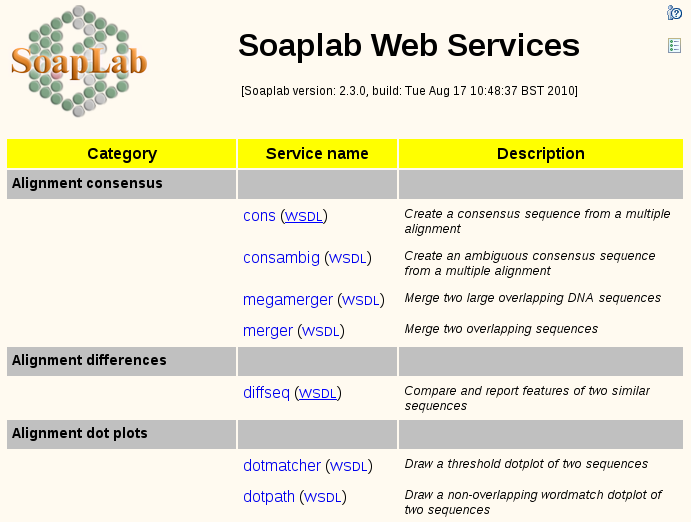

Spinet - Simple Web Client
The Soaplab's main raison d'être is to be a Web service. As
such, it provides its services to various, possibly many, clients,
without caring much about how they were written or which programming
language was used to create them. That is what a reasonably designed
Web service should do.
However, people that just installed Soaplab on their servers would
like to use it at once, to make sure that the installation went well,
without installing or fetching third-party clients first. Therefore,
Soaplab comes with its own simple client that can be used from any
modern web browser without writing any piece of additional code - and
that is Spinet.
The Spinet client appears almost automatically as the Soaplab Welcome
page (the page provided by your Tomcat when you point your browser to
the Soaplab services URL). It allows to select a service, to specify
its inputs in a usual HTML form, start the service, and to display its
results. What could be a simpler client?
Yes, we know that this is not a typical usage of Web services (the Web
services are for programs not for clicking humans, right?) - but it
can help with testing and obtaining attention to your Soaplab
servers.
How to use Spinet
The URL of the Spinet is the same as the URL of your Soaplab services
- without any service name attached. By default, it is
http://localhost:8080/soaplab2/. When you point your browser
there you should see a similar welcome page to this one (the list of
services may be, of course, different, depending what services you had
deployed):

The services are grouped by their categories. The service names are
click-able: the same click either open or close a service panel, a
panel with the form for service inputs and with the links to the
service results (once the service has been executed). You can collapse
(close) all currently open service panels by clicking on the icon in the right upper corner.
The simplest possible Soaplab2 service is a classic HelloWorld. Here
are its screen shots:
|
|
The service panel has only one text field where you
can type your favorite greeting. Or you can leave it unchanged - and
the default value will be used. Just press Run
service... |
|
|
When the service is finished it shows its report and
a list of links to the results. The report and
detailed_status are special results that are shown within the
service panel (therefore, if you prefer to see the report in a
separate window, click right on it and select such option in the
browser-provided menu), other results will be open in a separate
window or tab. |
|
|
The same service panel can be used to run the same
service (perhaps with different inputs) again and again. The
individual jobs are shown side by side. Any of them can be
Removed. Note that you can close the service panel (by
clicking on the service name link) and open again, and the last inputs
and jobs results and states are still kept there. |
|
|
The small icon in the left upper corner displays a help text. The richness of the shown text largely depends on the service metadata you have put into the service ACD (or XML) file.
Each input field can have also its own help text. Its contents again
depends on the service metadata (see more about fields help,
prompt and info in the metadata guide). |
The service panels can be more complex. Here is an example of a (still
rather simple) EMBOSS classic Seqret service:
|
|
The panel separates the mandatory and optional
inputs. You can also see more types of inputs (check boxes, lists,
radio buttons).
However, the most noticeable is the mandatory sequence sub-panel. Here
one can specify a sequence either directly (by using a text area and
the radio button "direct data or local file"), or as a
reference (by using a text field, perhaps with a help of available
EMBOSS databases in the select list, and the radio button "as USA or as URL", or even to upload a
sequence from a local file.
Be careful when selecting a local file
for uploading - if you misspell it, it may not be reported
properly. |
Now, let's look at the service that has a bit more appealing, graphical
results - the Prettyplot from EMBOSS:
|
|
Here you can see two executions of the same service
but with two different graphical output formats: the PNG images and
colored postscript. |

|
Some Soaplab results are actually a list of
individual results - such as an array of graphical PNG images from the
previous example. For such results, Spinet provides a bar with indexes
of available result pages; the result page is then shown below the
yellow bar. |
There are few other features that may be worth to mention:
|
|
A service execution is monitored by a status
sub-panel. It is updated automatically every few seconds but you may
set manually a longer polling interval. Which is useful for the longer
running services. You can also click on Update now to get an
immediate status.
Sometimes the status window of very short-live
services does not update automatically and you need to click on the
Update now button.
There is also a button Terminate to interrupt a running
service.
|
|
|
The EMBOSS services dealing with input sequences
have a database selection list that shows those databases
your EMBOSS installation was
configured for. Making a selection copies a selected database
prefix to the reference text field below the list - without removing
the sequence name (if there is already any entered there). |
How to configure Spinet
Actually, you do not need to configure anything special for Spinet
client.
It is worth to pay some attention to the configuration of the Soaplab
services - but there is nothing special to do for the Spinet
client. Perhaps, it is good to make sure that you have enabled Soaplab
results provided as URLs. By default, this feature is, however,
already enabled. Spinet can definitely takes advantage of the result
of the URL type.
The properties dealing with URL results are results.url.ignore,
results.url.target.dir
and results.url.
More about how to configure Soaplab services is in the configuration guide. Spinet has
also good understanding of the Soaplab services rapping EMBOSS - the
notes how to deploy and configure them is in the EMBOSS notes.
Spinet client is installed/deployed (together with the Soaplab
services) in the Tomcat. It uses local protocol to get access
to the Soaplab services. This means that Spinet sits in the same JVM
as Soaplab services.
This particularly means that Spinet cannot be
deployed in a different Tomcat. But this may be desirable - therefore,
this may be made possible in the future.
How to deploy Spinet
Spinet is deployed automatically when Soaplab2 service are being deployed. There are, however, few
built-time properties that can be set and influence the deployment:
- soaplab.docs.url
- A property containing a URL to the Soaplab2 documentation. Its
default value is http://soaplab.sourceforge.net/soaplab2/. Which
is usually good enough. But you may wish to have there instead a link
to your own page, with information about your Soaplab2
services.
- local.contact
- Similarly as above, you may wish to set this property with the
name and email address of a person whom to complain about problems
with your services. The default value is <a
href="mailto:martin.senger@gmail.com">Martin
Senger</a>.
- web.monitor
- Similarly as above, you may wish to set a web monitoring script for Spinet page, like
Google Analytics or Piwik. Value of web.monitor must be on a single line. NO web monitor by default.
- spinet.welcome.msg
- A property to customise title of your Spinet web page.
The default value is "Soaplab Web Services".
Following snapshot is from a Soaplab server that has customised
spinet.welcome.msg property and
has typed interface enabled.

Last modified: Tue Aug 17 11:03:55 2010